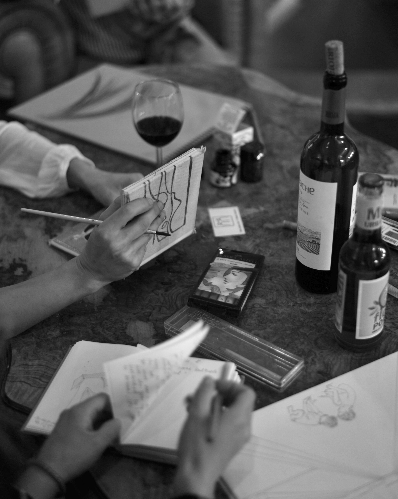

Was ist das D’n’D?
Mit dem Drink and Draw Zürich wird ein Ort geschaffen, an dem Menschen zusammenkommen, um gemeinsam zu zeichnen, sich auszutauschen und dabei einen Drink zu geniessen.
Für wen ist das D’n’D?
Das D’n’D ist für alle da, die gerne zeichnen, oder es lernen möchten. Vorkenntnisse sind nicht nötig. Es sind sowohl Profis wie auch AnfängerInnen willkommen. Am besten Du kommst einfach vorbei und schaust was dabei entsteht.
Was passiert am D’n’D?
In der Regel haben wir etwas vorbereitet. Beispielsweise haben wir ein Aktmodell oder geben Ideen, wie Ihr Euch von der Umgebung oder Ausstellungsobjekten inspirieren lassen könnt. Ihr könnt das D’n’D aber auch als Ort nutzen, um an Euren persönlichen Projekten weiterzuarbeiten.
Wieviel kostet das D’n’D?
Die Teilnahme ist kostenlos, wir haben aber eine Kollekte und freuen und über ein kleines Trinkgeld.
